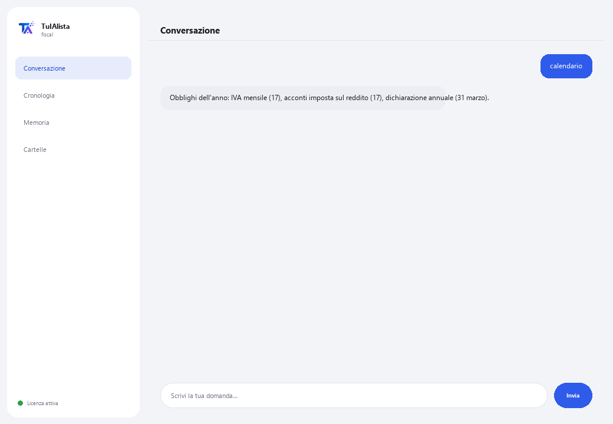

Agente Conformità Fiscale
Organizza i tuoi documenti fiscali, prepara il tuo calendario di scadenze e ti avvisa prima di ogni termine fiscale.
Cosa risolve e cosa ti serve?
Perdere una scadenza fiscale costa multe e sovrattasse. Questo agente trasforma la cartella dove conservi i tuoi documenti fiscali (fatture, dichiarazioni, certificati, XML CFDI) in un pannello di conformità: ti dice cosa scade presto, cosa potrebbe mancare e quali spese potrebbero essere deducibili — tutto calcolato sul tuo dispositivo.
- Ti serve: la tua chiave di licenza (TIA-XXXX-XXXX-XXXX-XXXX) e la cartella con i tuoi documenti. Niente Python né conoscenze tecniche.
- Primo risultato in meno di 5 minuti: installi, attivi, scegli la tua cartella ed esegui calendario per vedere gli obblighi dell'anno.
- I tuoi documenti fiscali non lasciano mai il tuo computer — l'analisi gira in locale.
soporte@tuialista.com o visita tuialista.com/soporte — di solito rispondiamo lo stesso giorno lavorativo.1 Cosa fa questo agente
Gli indichi la cartella con i tuoi documenti fiscali e lui:
- Li indicizza (PDF, Word, Excel, CSV, TXT, XML CFDI, anche in sottocartelle) ed estrae i dati chiave: partita IVA, regime, periodi, tipo di documento, IVA, imposta sul reddito, ritenute, totale e date.
- Prepara un calendario di scadenze dell'esercizio con le date limite tipiche secondo il regime rilevato.
- Ti avvisa degli obblighi in scadenza (e di quelli appena scaduti).
- Rileva possibili deduzioni menzionate nei tuoi documenti.
- Rileva documenti o mesi che potrebbero mancare nel tuo fascicolo.
- Genera un riepilogo fiscale esecutivo del periodo, con raccomandazioni.
- Risponde a domande libere sulla tua situazione fiscale, nella tua lingua.
Risultato: arrivi a ogni scadenza fiscale organizzato e senza sorprese — senza dover aprire ogni file uno per uno per sapere a che punto sei.
2 Installazione (2 minuti)
Per Windows. Non serve internet permanente né caricare nulla sul cloud.
Scarica l'installer da tuialista.com/descargar (agente Fiscale) e aprilo. Crea un collegamento sul desktop con il logo — non richiede Python né terminale.
Doppio clic sulla nuova icona. Incolla la tua chiave di licenza (ricevuta via email all'acquisto) e premi Attiva. Vedrai un segno di spunta verde quando è valida.
Seleziona la cartella con i tuoi documenti fiscali e premi Inizia a usare l'agente. La prossima volta che lo apri, si avvia direttamente — ricorda la tua chiave e la tua cartella.
3 Come usarlo
L'agente apre una finestra di chat, come un'app di messaggistica — non è uno schermo nero da programmatore. Scrivi il tuo comando o la tua domanda nella casella di testo in basso, premi Invia (o Invio), e la risposta appare come un messaggio, proprio come in questa immagine reale:

I comandi seguenti sono le parole che puoi scrivere nella stessa casella di testo:
> calendarioI tuoi obblighi dell'anno: acconti d'imposta sul reddito, IVA mensile, dichiarazione operazioni con terzi e dichiarazione annuale, con date limite tipiche secondo il tuo regime.
> obblighi [giorni]Ciò che scade presto — di default i prossimi 30 giorni, incluse quelle appena scadute, ordinate per urgenza. Es.: obblighi 15.
> deduzioniRileva menzioni di spese potenzialmente deducibili (affitto, onorari, carburante, software, previdenza sociale...) e in quali file appaiono.
> mancantiMesi dell'esercizio senza giustificativi e tipi di documento attesi non trovati.
> riepilogoRiepilogo fiscale esecutivo: situazione generale, documentazione disponibile, obblighi critici, possibili deduzioni e raccomandazioni.
> analizzare <file>Partita IVA, tipo, regime, periodi, IVA, imposta sul reddito, ritenute, totale e date estratti da un documento specifico. Es.: analizzare dichiarazione_maggio.pdf.
> domanda libera?Puoi scrivere qualsiasi domanda in linguaggio naturale, es.: quali obblighi ho sotto il regime fiscale semplificato?
> esciTermina la sessione (funziona anche exit).
Vuoi vedere le 20 ricette complete con un esempio reale per ciascuna? Consulta il Catalogo delle ricette — un documento separato data la sua lunghezza: catalogo_recetas.pdf insieme a questo manuale, o la versione interattiva su tuialista.com/guia/fiscal/recetas.
4 Esempi di uso comune
Preparare il mese
obblighi 30 → mancanti
Rivedere le deduzioni prima della dichiarazione annuale
deduzioni → riepilogo
Vedere il calendario completo dell'anno
calendario
Una domanda puntuale
quando scade la mia dichiarazione annuale come persona fisica?
5 Domande frequenti
I miei documenti fiscali vengono caricati su internet?
Quali formati accetta?
Le date del calendario sono ufficiali?
Questo sostituisce il mio commercialista?
Come conosce il mio regime?
Le deduzioni rilevate sono sicuramente deducibili?
Gli importi di IVA/imposta sul reddito estratti sono esatti?
Legge un PDF scansionato?
In quale lingua risponde?
Modifica i miei documenti?
6 Risoluzione dei problemi
Non legge un .pdf, .docx o .xlsx
Mostra “0 documenti indicizzati”
Non rileva la mia partita IVA o il mio regime
Mostra “Licenza non valida” o chiede di riconnettersi
“Nessun fornitore IA configurato”
Nessuna di queste soluzioni ha risolto il tuo problema? Scrivici direttamente — saremo felici di rivederlo con te.
soporte@tuialista.com o visita tuialista.com/soporte — di solito rispondiamo lo stesso giorno lavorativo.7 Privacy e riservatezza
I tuoi documenti fiscali non lasciano mai il tuo computer.
- L'agente legge, indicizza ed estrae dati in locale, sul tuo stesso dispositivo. Non carica i tuoi documenti su nessun server né all'amministrazione fiscale.
- Il calendario, gli obblighi, le deduzioni, i mancanti e l'analisi dei documenti vengono calcolati sul tuo dispositivo.
- L'unica cosa che viaggia su internet è: (1) una verifica che la tua licenza sia attiva — che non include i tuoi documenti —, e (2) quando usi riepilogo o fai una domanda libera, viene inviato un frammento delle informazioni rilevanti al motore IA per redigere quella risposta.